Serveur OCS
Objectif et environnement
Objectif
L’installation et configuration d’un serveur OCS Inventory dur un containeur Debian 11.
Environnement
Matériels :
Dell PowerEdge r240 avec Proxmox 7.1-7
Adressage des VMS :
Réseaux : 172.16.0.0/16
Serveur OCS : CT-DEB-GLPI 172.28.1.205/16 (colocalisé avec GLPI)
Documentation
Processus
Installation et configuration des prérequis
Installation Apache2
apt update
apt install apache2 -y
systemctl enable apache2
Création la configuration fqdn
nano /etc/apache2/conf-available/fqdn.conf
# remplissez hostname
ServerName CT-DEB-GLPI
a2enconf fqdn
systemctl reload apache2
Installation Php
apt install php -y
Créer index.php
nano /var/www/html/index.php
# le contenu du fichier
\< ?php
Phpinfo() ;
?\>
Vérifiez dans le navigateur

Supprimer les fichiers inutiles
rm /var/www/html/index.php
systemctl restart apache2
Installation Mariadb
apt install mariadb-server mariadb-client -y
systemctl enable mariadb.service
Création de la base de données
mariadb -u root
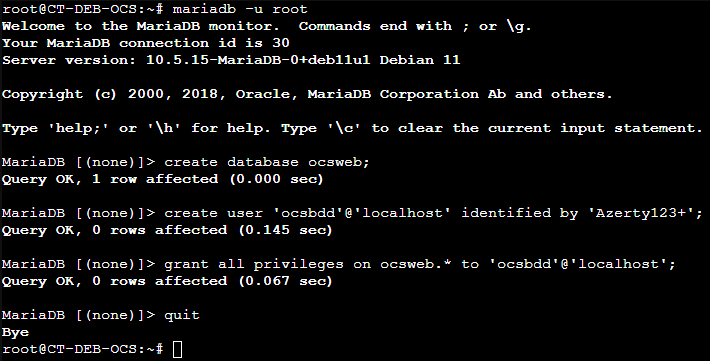
Installation OCS Inventory
apt install apache2-dev libmariadb-dev-compat php-soap cpanminus
libnet-ssleay-perl libio-socket-ssl-perl -y
cpan install YAML # répondre yes
cpan install –f CPAN # répondre yes
cpan install XML::Simple Compress::Zlib DBI DBD::mysql Apache::DBI
Net::IP Archive::Zip XML::Entities
apt install libxml-simple-perl libperl5.32 libdbi-perl libdbd-mysql-perl
libapache-dbi-perl libnet-ip-perl libsoap-lite-perl libarchive-zip-perl
make build-essential php-pclzip php-mbstring php-mysql php-curl php-xml
php-zip php-gd -y
cpan install Apache2::SOAP
cpan install Mojolicious::Lite Switch Plack::Handler
Installation du serveur
J’ai téléchargé ocsinventory sur ce site : download.ocsinventory-ng.org/nightly
cd /tmp
wget
http://download.ocsinventory-ng.org/nightly/OCSNG_UNIX_SERVER_2.10.0-nightly-2022-08-19.tar.gz
tar xzf OCSNG_UNIX_SERVER_2.10.0-nightly-2022-08-19.tar.gz
cd OCSNG_UNIX_SERVER
systemctl restart apache2
sh setup.sh # Tapez entrée à chaque question
Configuration du serveur OCS
nano /etc/apache2/conf-available/z-ocsinventory-server.conf
J’ai modifié ses deux lignes pour faire correspond avec la configuration de notre base de données

nano /etc/apache2/conf-available/zz-ocsinventory-restapi.conf

chown root:www-data /var/lib/ocsinventory-reports
chmod 775 /var/lib/ocsinventory-reports
Activation de la configuration de OCS
a2enconf z-ocsinventory-server
a2enconf ocsinventory-reports
a2enconf zz-ocsinventory-restapi
systemctl restart apache2
On accède aux restes des configurations via le navigateur
http://172.28.1.205/ocsreports
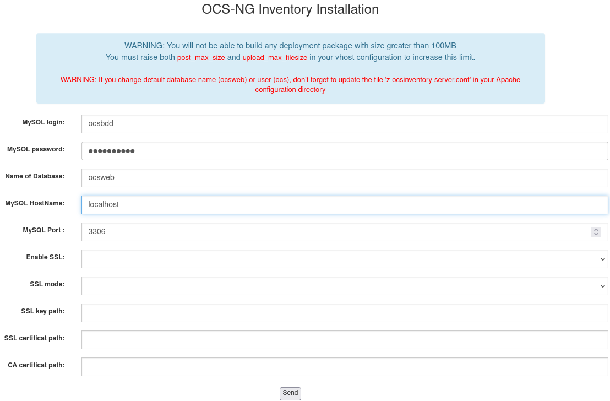
OCS va peupler la base de données

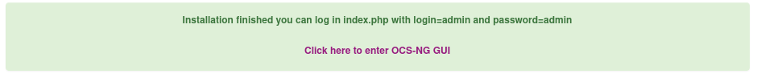
J’ai cliqué sur « Click here to enter OCS-NG GUI »

J’ai cliqué sur « perform the update »
Choix de langue en français login: admin, mdp. : admin

Paramétrer OCS
J’ai supprimé le fichier indiqué et crée un nouvel utilisateur avec un différente mot de passe.
Menu Configuration > Utilisateurs > Créer un utilisateur
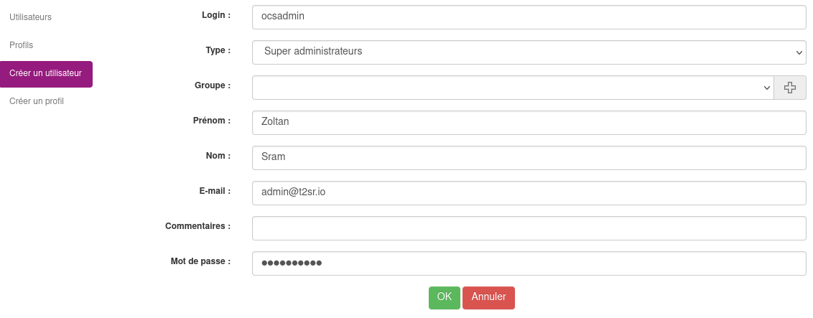
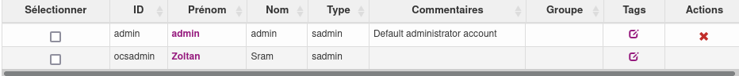
J’ai supprimé le compte créé par défaut
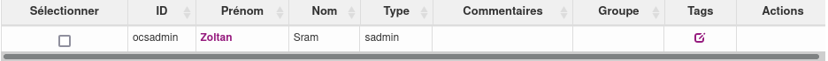
J’ai supprimé également le fichier install.php

Une fois la page rafraîchi, l’ALERTE SECURITE disparait.
Menu Configuration > General Configuration > Serveur
J’ai activé TRACE_DELETED (à cause de l’interconnexion avec GLPI)
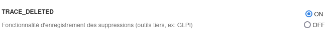
Configuration OCS avec GLPI 10.0.2
J’ai créé un compte gratuit sur https://services.glpi-network.com/
Ensuite j’ai copié la clé d’enregistrement
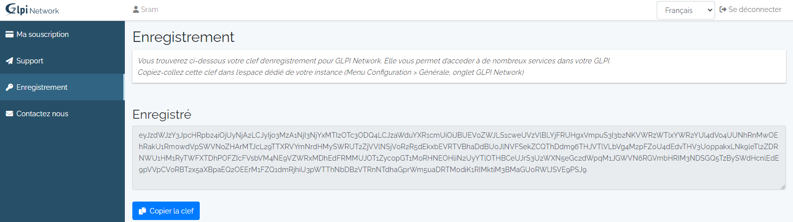
J’ai copié la clé dans
Menu Configuration > Générale > GLPI Network
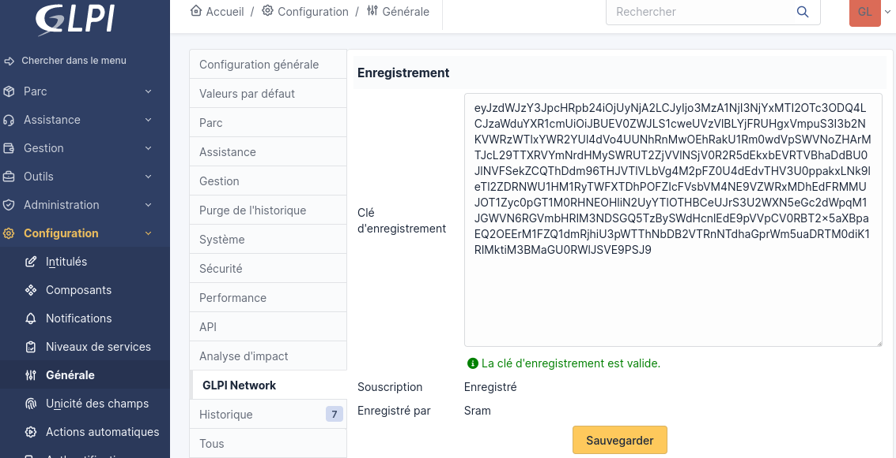
J’ai accédé GLPI marketplace et téléchargé le plugin OCS Inventory NG
Configuration > Plugins

J’ai cliqué sur configurer
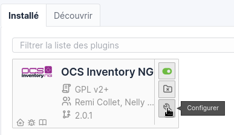
Serveurs OCSNG

Ajout serveur OCS
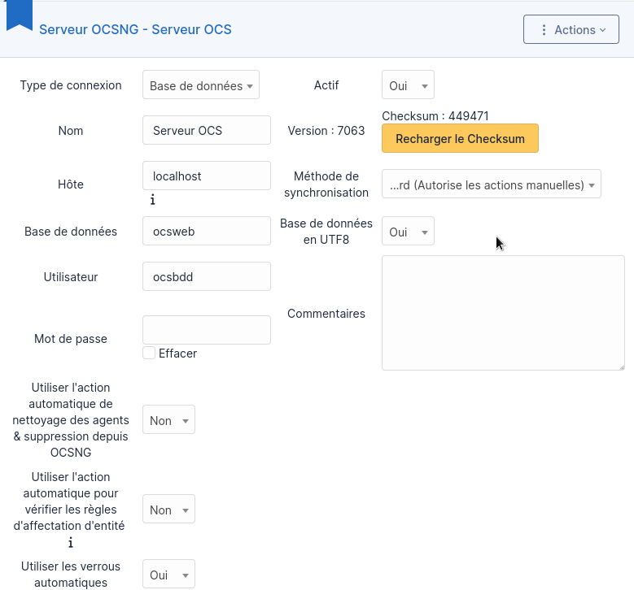
Tester

Menu Outils > OCS Inventory NG

Cliqué sur

OCS est désormais lié, nous pouvons importer un inventaire.

Configuration SSL
Création un dossier pour stocker le certificat
mkdir /etc/apache2/ssl
# installation openssl si ce n’est pas déjà le cas*
apt install openssl
Génération d’une clé RSA
openssl genrsa 2048 \> /etc/apache2/ssl/gestparc.key
Création du certificat
openssl req -new -key /etc/apache2/ssl/gestparc.key -x509 -days 365 -out
/etc/apache2/ssl/gestparc.crt
A la question Common Name, j’ai mis : CT-DEB-GLPI
Ensuite j’ai édité le fichier
/etc/apache2/sites-available/default-ssl.conf

J’ai activé SSL
a2enmod ssl
a2ensuite default-ssl
systemctl restart apache2
J’accède à la page GLPI en https

Installation OCS Inventory agent sur Windows
J’ai téléchargé l’agent sur le site officiel :
https://github.com/OCSInventory-NG/WindowsAgent/releases/tag/2.9.2.0
J’ai installé l’agent

J’ai lancé l’installateur
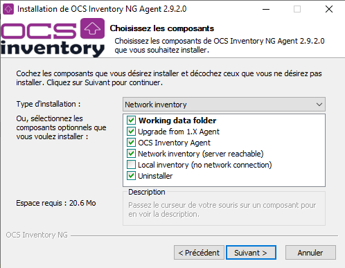
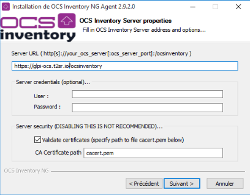


J’ai lancé l’installation
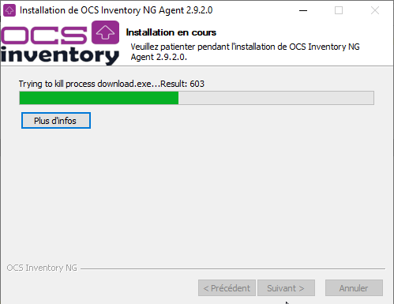
Ensuite j’ai copié le fichier gestparc.crt dans c:\ProgramData\OCS Inventory NG\Agent.
Puis j’ai renommé en cacert.pem.
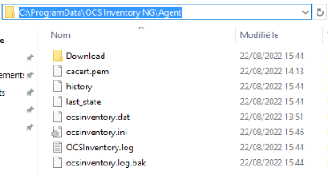
J’ai arrêté puis redémarré le service OCS Inventory
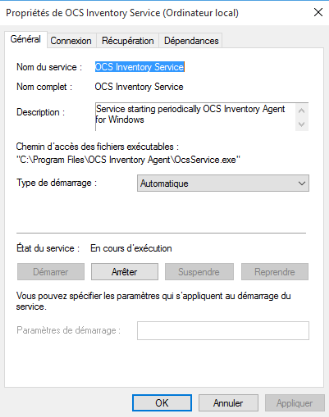
Notre client apparait dans OCS inventory
Installation OCS Inventory agent sur Linux
apt update
apt install libmodule-install-perl dmidecode libxml-simple-perl
libcompress-zlib-perl libnet-ip-perl libwww-perl libdigest-md5-perl
libdata-uuid-perl
apt install ocsinventory-agent
Choix http
J’ai rentré l’adresse de mon serveur OCS : https://glpi-ocs.t2sr.io/ocsinventory
J’ai mis à jour le serveur (mis à jour manuel)
ocsinventory-agent –server https://glpi-ocs.t2sr.io/ocsinventory
J’ai modifié de manière que l’agent soit mis à jour par heure :
mv /etc/cron.daily/ocsinventory-agent /etc/cron.hourly
Le client Debian est bien arrivé sur OCS
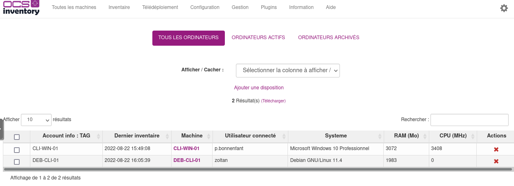
Importer l’inventaire dans GLPI 10.0.2
Menu Outils > OCS Inventroy NG > Import de l’inventaire > Importer et lier des ordinateurs
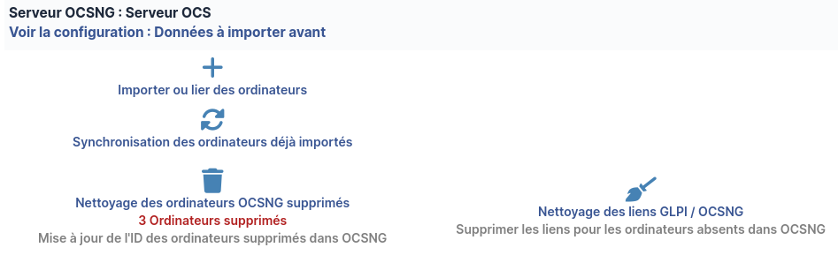
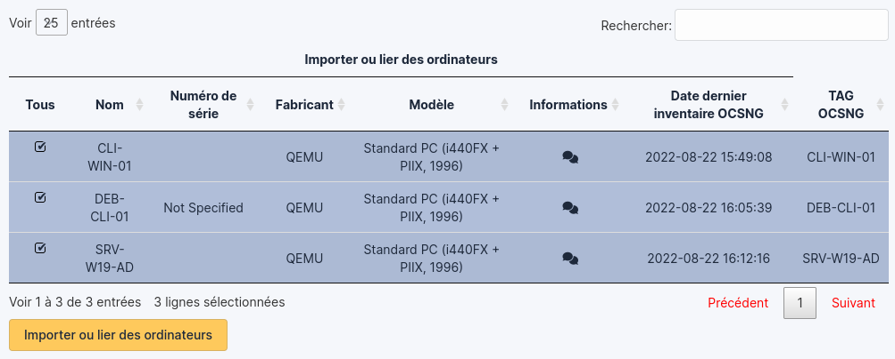
Intégrer le serveur OCS dans Active Directory

NB : le procédé d’intégration est expliqué dans le chapitre Active Directory.
Conclusion
L’importation des ordinateurs ne s’est pas déroulée correctement. J’ai créé une issue sur la page GitHub du développeur.